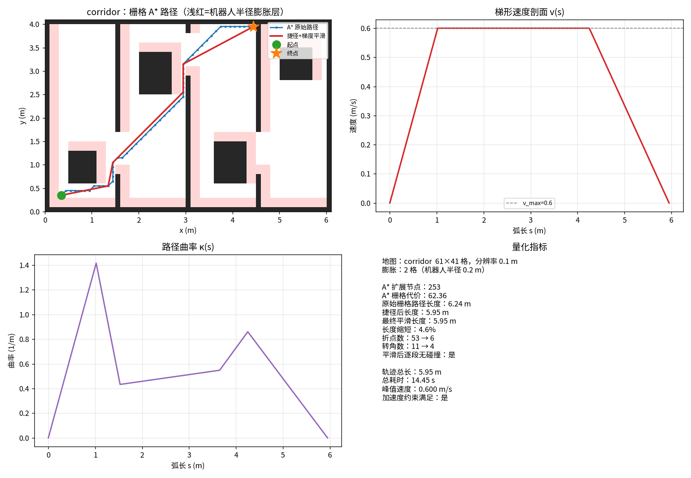
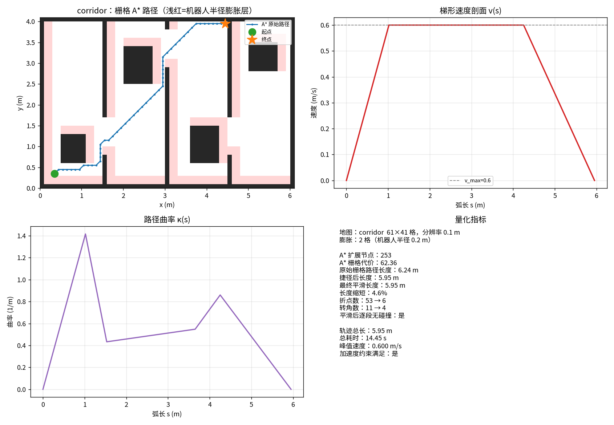
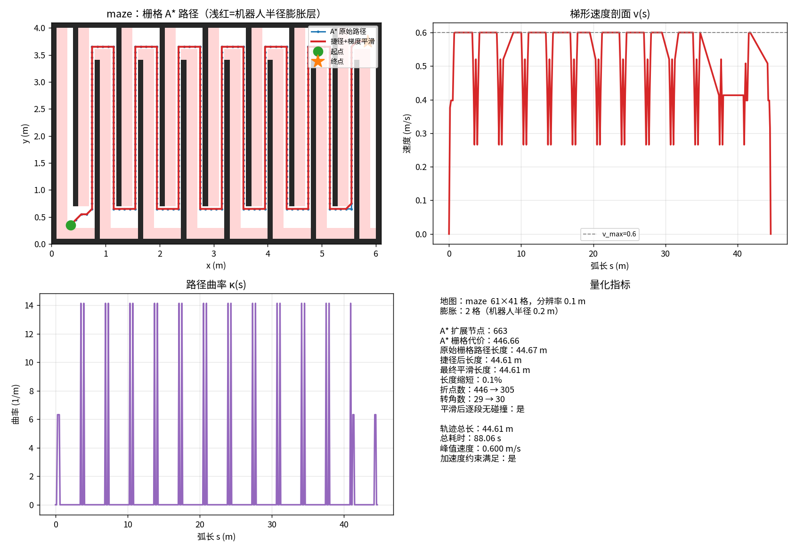
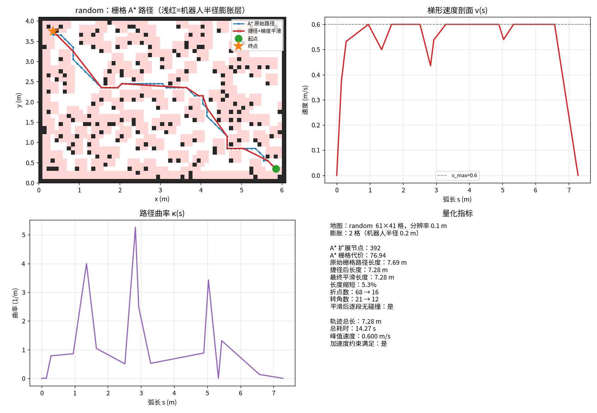

ROS2 差速机器人栅格 A* 全局路径规划
1. 概述
本文实现一个面向差速移动机器人的全局路径规划模块：输入占用栅格地图
（nav_msgs/OccupancyGrid）与目标位置，输出一条安全、平滑、带时间参数的路径
（nav_msgs/Path），可直接交给下层控制器跟踪。
核心算法只依赖 NumPy，无需 ROS / 仿真器即可跑通离线仿真与 50 项单元测试。
在 OpenHUTB/ros2 仓库中，本模块属于规划层，与已合并的
ros2_pure_pursuit（路径跟踪控制层）、ros2_ekf_localization（状态估计层）互补，
三者构成 "定位 → 规划 → 控制" 的完整链路：
/odom + /imu ─► EKF 定位 ─► /odometry/filtered ─┐
├─► A* 规划 ─► /plan ─► 纯追踪控制 ─► /cmd_vel
/map + /goal ──────────────────────────────────┘
整体流程：
/map (OccupancyGrid) ─┐
├─► 膨胀(避障裕度) ─► A* 搜索 ─► 视线捷径 ─► 梯度平滑 ─► 梯形速度剖面 ─► /plan (Path)
/goal (PoseStamped) ──┤ ▲ ▲
/robot_pose ──────────┘ └──────── 连通性预检 / 端点修复 / 超时保护 ─────────────┘
2. 方法
2.1 占用栅格与膨胀
栅格数组 grid[i, j] 中 i 为行（y 方向）、j 为列（x 方向），非零即占用。
规划前按机器人半径做方形结构元膨胀（切比雪夫距离），把机器人当作圆处理：
膨胀用两次可分离的最小值滤波实现，复杂度 且与半径无关：
- 横向：
- 纵向：
膨胀的必要性在第 5 节有定量验证：它直接决定通道是否还能通行。
2.2 A* 搜索
状态为栅格坐标，8 邻接代价为直行 1、对角 ：
启发式按邻接方式自动选择，保证可采纳性（ 不超过真实剩余代价）， 因此 时 A* 给出最优解：
| 邻接 | 启发式 | 公式 |
|---|---|---|
| 8 邻接 | octile | |
| 4 邻接 | manhattan |
工程细节：
- 二叉堆 + 延迟删除：不维护 decrease-key 索引，节点重复弹出时跳过；
- 平局打破： 相同时优先 小者（更接近目标），开阔地形上减少无谓扩展；
- 严格穿角：对角步要求两侧格都是自由格。只禁止"两侧都占用"虽然栅格层面合法， 但连接两个格心的直线仍可能擦过占用格的一角，与后处理的连续空间碰撞检查语义不一致；
- 有界搜索：
max_expansions超限立即终止，地图异常时不会打满 CPU； - 连通性预检：搜索前先做 4-邻接连通域标记，不连通直接返回明确原因。
2.3 路径后处理
栅格 A* 的输出被限制在 8 个方向上，转弯生硬、长度偏大，直接喂给移动机器人 会导致频繁加减速。这里做两级后处理。
一级：视线捷径（string pulling）——若两点间直线不穿越障碍，用直线段替换中间折点。 碰撞检查用超采样（采样间距为分辨率的 1/4），比标准 Bresenham 更保守， 能避免"斜着擦过格角"的漏检。
二级：梯度平滑——对剩余折点做迭代优化：
第一项把折线拉直，第二项只在点离障碍过近时产生斥力，把路径推离墙面。 梯度解析可求（无需自动微分），单步位移夹紧到 1 个分辨率以防发散。
平滑后逐段复核碰撞，若任一段被判碰撞则回退到捷径结果——保证输出永远安全。
2.4 时间参数化
几何路径转成可执行轨迹：
- 三点外接圆估计各点曲率 ；
- 曲率限速 ，避免转弯时侧向加速度超限；
- 沿弧长做前向 + 后向两遍扫描，用 保证加减速不超限 （后向扫描负责"提前刹车"）；
- 逐段按平均速度积分得到时间戳。
3. 安全设计
| 情况 | 处理 |
|---|---|
地图过期（/map 超时） |
拒绝规划并告警，避免在过期地图上给出穿墙路径 |
| 起点缺失 | 拒绝规划（不拿目标当起点） |
| 目标落在障碍内 | BFS 找到最近自由格，并在日志中说明 |
| 起终点不连通 | 连通性预检直接失败，指出"分属不同自由区域" |
| 不可采纳启发式 | 允许配置，但基准实验会显示其不再保证最优 |
| 参数非法（NaN / 非正 / 过大） | 启动时校验，非法值回退默认并告警 |
| 地图异常（搜索不收敛） | max_expansions 兜底，避免打满 CPU |
| 平滑后路径可能碰撞 | 逐段复核，异常时回退到未经平滑的路径 |
| 地图未知区域 | 按占用处理（保守），不当作可通行区域 |
4. 运行步骤
4.1 安装依赖
pip3 install -r requirements.txt # numpy / matplotlib
4.2 离线仿真（无需 ROS）
python3 sim/run_sim.py --map corridor --out results/corridor.png
python3 sim/run_sim.py --map maze --out results/maze.png
python3 sim/run_sim.py --map random --out results/random.png
4.3 基准矩阵
python3 sim/benchmark.py # 输出 results/benchmark.md
4.4 ROS2 中部署
colcon build --packages-select ros2_astar_planner
source install/setup.bash
ros2 launch ros2_astar_planner plan.launch.py robot_radius:=0.20
| 话题 | 类型 | 方向 | 说明 |
|---|---|---|---|
/map |
nav_msgs/OccupancyGrid |
订阅 | 栅格地图（未知区域按占用处理） |
/goal |
geometry_msgs/PoseStamped |
订阅 | 目标点 |
/robot_pose |
geometry_msgs/PoseStamped |
订阅 | 机器人当前位姿（起点） |
/plan |
nav_msgs/Path |
发布 | 平滑并时间参数化后的路径 |
/plan_info |
std_msgs/String |
发布 | JSON 诊断信息 |
常用参数：robot_radius、inflation_extra、allow_diagonal、heuristic、
weight、v_max、a_max、plan_timeout、map_timeout、use_smoothing。
5. 实验结果
5.1 规划质量
三种地图（走廊 / 迷宫 / 随机障碍）× 五种搜索配置的完整数据见
src/ground/ros2_astar_planner/results/benchmark.md，关键结论：
| 结论 | 定量结果 |
|---|---|
| 最优性验证 | A*(octile) 与 Dijkstra 代价完全一致（相对差 0.00%），证明启发式可采纳 |
| 搜索效率 | A* 相比 Dijkstra 扩展节点减少 2.8% ~ 74.8%（走廊 74.8%、随机障碍 42.7%）；迷宫因通道狭窄，启发式信息量低，收益仅 2.8% |
| 加权 A* 的取舍 | w=1.5 扩展节点最多减少 79.3%，代价最多劣化 3.2% |
| 对角收益 | 8 邻接比 4 邻接代价低 0.5% ~ 19.0%（走廊 19.0%、随机障碍 15.5%；迷宫通道笔直，对角几乎无收益 0.5%） |
5.2 走廊场景：路径与速度剖面

图中浅红色为机器人半径对应的膨胀层，蓝线为 A* 原始路径，红线为捷径 + 梯度平滑结果。 右侧为梯形速度剖面 与曲率 ；指标面板给出路径长度、扩展节点数、 折点/转角变化与加速度约束校验结果。
平滑把折点数从 53 降到 6、转角数从 11 降到 4，路径长度从 6.24 m 缩短到 5.95 m（4.6%）。
5.3 平滑前后对照
下图为关闭平滑的对照图：折线沿 8 个栅格方向折行，转角多、速度无法连续， 下游控制器需要频繁加减速。

5.4 迷宫场景

迷宫场景平滑后路径几乎不变（缩短 0.1%）：通道狭窄时两点之间本就没有可直达的视线， 捷径算法找不到可替换的直段。这恰恰说明后处理不会为了缩短路径而牺牲避障安全。
5.5 随机障碍场景

5.6 通道宽度与机器人半径
用"一墙一门"地图（房间固定、端点在房间中央，连通性只由门宽决定）， 固定机器人半径 0.20 m（膨胀 2 格）扫描门洞宽度：
| 门洞净宽 | 膨胀 1 格 (0.10 m) | 膨胀 2 格 (0.20 m) | 膨胀 3 格 (0.30 m) |
|---|---|---|---|
| 0.10 m | 不可通行 | 不可通行 | 不可通行 |
| 0.20 m | 可通行 | 不可通行 | 不可通行 |
| 0.30 m | 可通行 | 可通行 | 不可通行 |
| 0.40 m 以上 | 可通行 | 可通行 | 可通行 |
通道净宽必须大于 2×膨胀半径。膨胀层把门洞堵死时，规划器会如实返回 "起点与终点不连通"，而不会给出一条穿墙的路径——这正是安全裕度必须与 地图分辨率一起考虑的原因。
6. 局限与展望
- 8 邻接 A* 在大地图（>200×200）上扩展节点仍偏多，可用 JPS / 双向 A* 改进；
- 膨胀是各向同性的方形结构元，未考虑机器人非圆形外形（如长方体车体的朝向约束）；
- 后处理是几何层面的，没有做动力学可行性检查（最小转弯半径）；
- 仅规划单段路径，未实现多段路网与全局重规划；
- 离线仿真使用合成地图，尚未在 Gazebo / CARLA 中接入真实
/map话题验证。
7. 自测
python3 tests/test_core.py # 50 项单元测试
bash ci/run_ci.sh # 语法/依赖/测试/仿真/基准 五阶段
8. 许可与署名
MIT License。
作者：李诚轩（学号 2535030014）